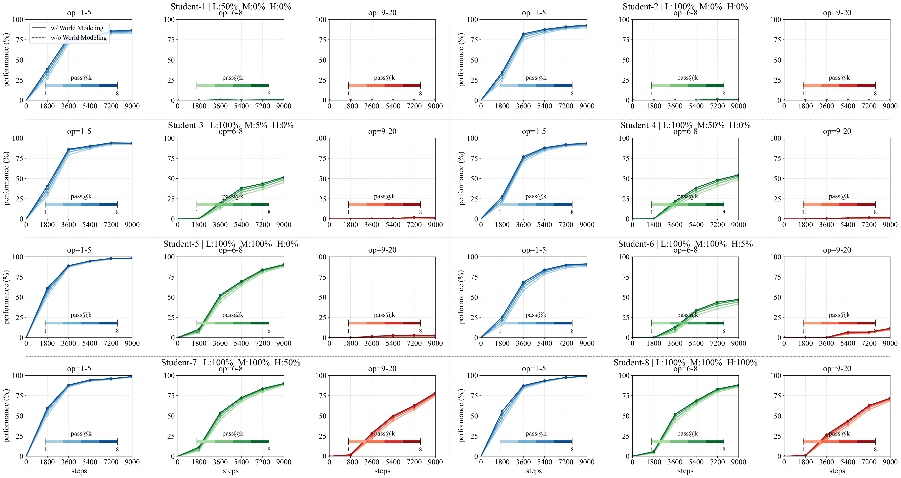

01
Pre-training
Planning begins with an internal world model.
We isolate three data factors—format, distribution, and quality—to trace how long-horizon ability is acquired before post-training.
- Chain-of-thought state-transition modeling improves long-horizon generalization.
- Atomic skills do not compose automatically, but a small amount of long-horizon data activates the capability.
- Suboptimal trajectories are especially harmful because errors accumulate across long sequences.
